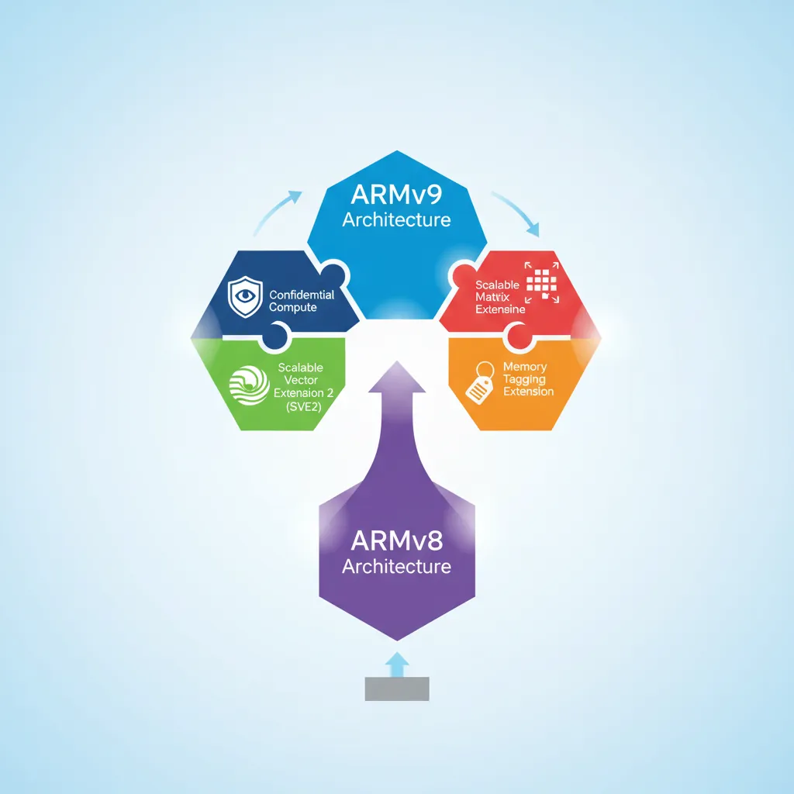
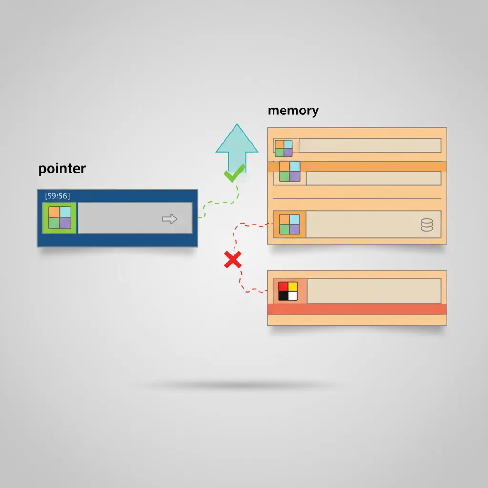
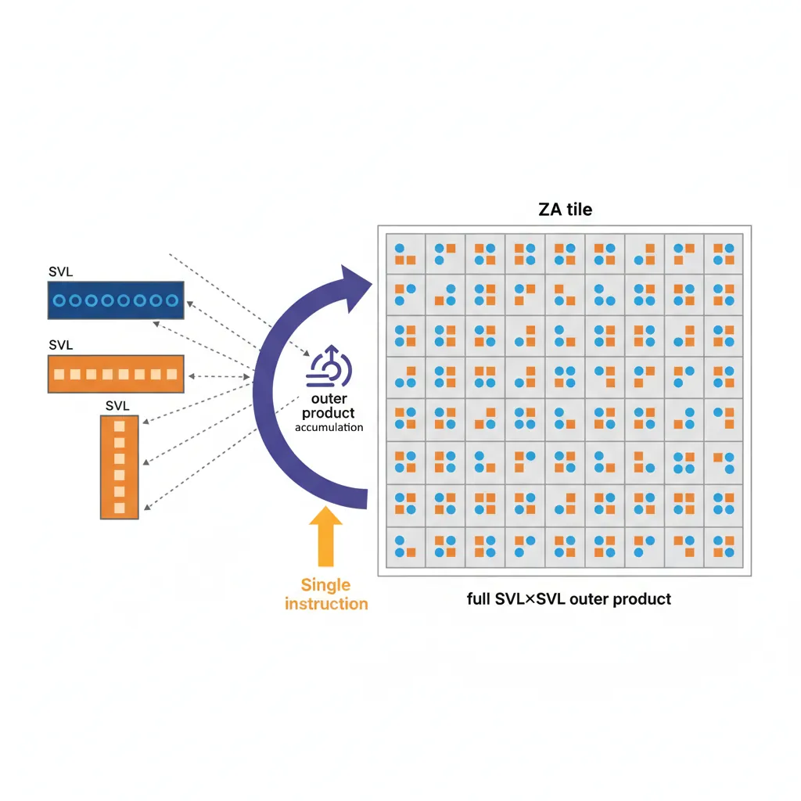
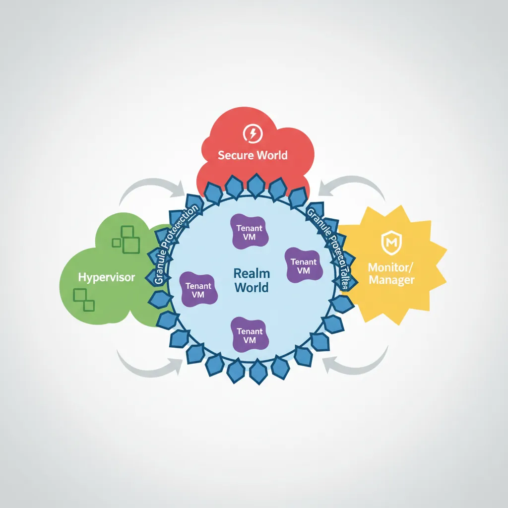
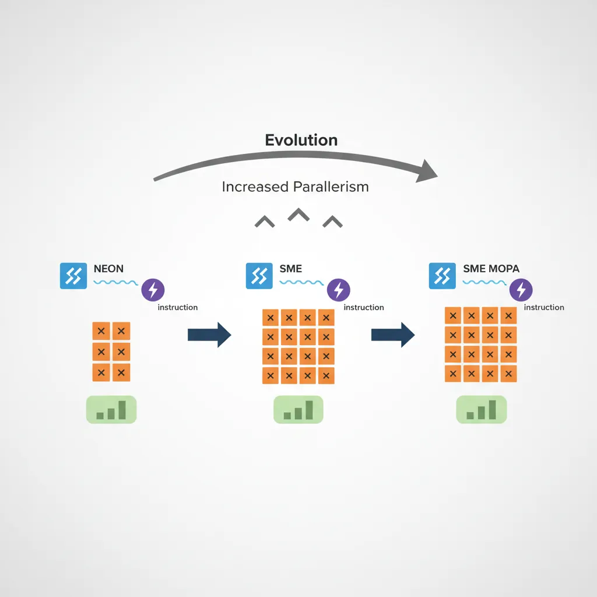

ARMv9.0 (2021) was the first major architectural version since ARMv8 in 2011. It mandated SVE2 for server-class cores, introduced the Realm Management Extension for confidential computing, and continued a decade-long trend of adding new feature flags instead of breaking instruction semantics. This final instalment surveys the most impactful ARMv9 additions — MTE, SME, CCA, and AI matrix instructions — and closes with a glance at where ARM is heading next.
ARMv9 Overview

Mandatory and New Features
ARMv9 key feature changes vs ARMv8
| Feature | ARMv8 | ARMv9 |
|---|---|---|
| SIMD baseline | NEON optional (mandatory for A-profile) | SVE2 mandatory for Cortex-A (server/HPC) |
| Memory safety | PAC (8.3), BTI (8.5), MTE optional (8.5) | MTE more deeply integrated across profiles |
| Confidential compute | TrustZone (S/NS worlds) | CCA adds Realm world (4th security state) |
| Matrix compute | FEAT_DotProd (8.4), I8MM (8.6) | SME (Scalable Matrix Extension) new in 9.2 |
| Branch recording | ETM/PTM trace | BRBE (Branch Record Buffer Extension) |
| Transactional memory | Not present | TME (Transactional Memory Extension) — optional |
| Debug | Self-hosted debug v8.4 | TRBE (Trace Buffer Extension) in-memory trace |
ARMv9 Silicon Timeline
ARMv9 processor releases
- Cortex-A510/A710/X2 (2022) — First ARMv9 CPU cores; Cortex-A510 implements SVE2 at 128-bit VL (vector length), power-efficient core.
- Cortex-A520/A720/X4 (2023) — ARMv9.2, adds MTE support; Cortex-X4 paired with Immortalis-G720 GPU in Snapdragon 8 Gen 3.
- Neoverse V2 (2022) — ARMv9 server core (AWS Graviton4, Google Axion); 256-bit SVE2, MTE, 4× DDR5 channels.
- Apple M-series — ARMv8.6+ (ARM64e); PAC everywhere, but not full ARMv9 SVE2 — Apple uses custom SIMD width strategies.
- Cortex-A725/X925 (2024) — ARMv9.2+, SME2 debut in mobile; Cortex-X925 reaches ~3.85 GHz peak.
Cortex-A510 Micro-architecture Deep Dive
The Cortex-A510 is ARM's first ARMv9-A LITTLE core, replacing the Cortex-A55. It is found in virtually every flagship SoC since 2022 (Snapdragon 8 Gen 1 / Dimensity 9000 / Exynos 2200) as the efficiency cluster that handles background tasks, Always-On-Display, and sensor hub workloads.
Cortex-A510 vs Cortex-A55 Comparison
| Feature | Cortex-A55 (ARMv8.2) | Cortex-A510 (ARMv9.0) |
|---|---|---|
| Pipeline | 8-stage in-order | Dual-issue in-order, deeper pipeline (~11 stages) |
| Decode | 2-wide decode | 2-wide decode with macro-op fusion |
| SIMD / Vector | NEON 128-bit (ASIMD) | SVE2 at 128-bit VL + NEON backward compat |
| Branch Prediction | Simple bimodal | Larger BTB, improved indirect predictor |
| L1 Cache | 32 KB I + 32 KB D | 32 KB I + 32 KB D (same size, better prefetch) |
| L2 Cache | Private 64–256 KB | Shared between 2 cores (64–256 KB per pair) |
| IPC Uplift | Baseline | ~35% higher IPC at same frequency |
| Power Efficiency | Baseline | ~20% lower energy per task |
| Security | FEAT_PAuth optional | FEAT_PAuth + MTE + BTI mandatory |
| ISA | ARMv8.2-A | ARMv9.0-A (Realm Management, SVE2, MTE) |
Memory Tagging Extension (MTE)
MTE (ARMv8.5-A, FEAT_MTE) is a hardware mechanism to detect spatial and temporal memory safety violations at near-zero cost. Every 16-byte aligned granule of physical memory has a 4-bit allocation tag stored in special ECC-like storage. Every pointer has a 4-bit logical tag stored in its top byte (bits [59:56]). A tag mismatch on load/store can either fault synchronously, fault asynchronously, or be silently ignored depending on system register configuration.

MTE Instructions
; ----- MTE Instruction Reference -----
; IRG Xd, Xn [, Xm] — Insert Random Tag
; Generates a random 4-bit tag, inserts into bits [59:56] of Xd
; Xn provides the base address; optional Xm is a tag exclusion mask
IRG x0, x1 ; x0 = tagged ptr (random tag in [59:56]), base=x1
; ADDG Xd, Xn, #imm6, #imm4 — Add with Tag
; Adds scaled offset to Xn, AND replaces tag with #imm4
ADDG x1, x0, #16, #2 ; x1 = x0+16, tag=2 (for next 16B granule)
; STG Xt, [Xn {, #simm9}] — Store Tag
; Stores the tag from bits [59:56] of Xt to the allocation tag of [Xn]
STG x0, [x0] ; allocate tag at the address x0 points to
; STGM Xt, [Xn] — Store Tag, Multiple (fills an entire page)
; EL1/EL2 only — initialises all tag granules in the page
; LDG Xd, [Xn {, #simm9}] — Load Tag
; Loads the 4-bit allocation tag from [Xn] into bits [59:56] of Xd
LDG x2, [x0] ; x2 = x0 with allocation tag filled in [59:56]
; STGP Xt1, Xt2, [Xn{, #simm7}] — Store Tag and Pair
; Stores two registers and sets tag in one instruction (like STP+STG)
; STZG Xt, [Xn {, #simm9}] — Store Zero with Tag
; Zeroes the 16-byte granule and sets its allocation tag
; Example: allocating a tagged buffer
; Assume x0 = untagged base address of 64-byte allocation
mte_alloc_64:
IRG x0, x0 ; assign random tag to pointer
STG x0, [x0, #0] ; tag granule 0
STG x0, [x0, #16] ; tag granule 1
STG x0, [x0, #32] ; tag granule 2
STG x0, [x0, #48] ; tag granule 3 (all 4 granules get same tag)
ret ; caller uses tagged x0 for all access# Enable MTE for a process (Linux 5.10+, requires kernel CONFIG_ARM64_MTE)
# prctl(PR_SET_TAGGED_ADDR_CTRL, PR_TAGGED_ADDR_ENABLE | PR_MTE_TCF_SYNC, 0, 0, 0)
# In C:
# #include <sys/prctl.h>
# prctl(PR_SET_TAGGED_ADDR_CTRL,
# PR_TAGGED_ADDR_ENABLE | PR_MTE_TCF_SYNC | (0xffff << PR_MTE_TAG_SHIFT),
# 0, 0, 0);
# Build with GCC/Clang MTE sanitizer (software-assisted MTE, Android 12+)
clang --target=aarch64-linux-android33 \
-fsanitize=memtag \
-fsanitize-memtag-mode=sync \ # synchronous fault on mismatch
-march=armv8.5-a+memtag \
-O2 -o mte_test main.c
# Verify MTE availability on system
cat /proc/cpuinfo | grep "asimdrdm\|dcpop\|mte" # mte entry confirms supportAndroid MTE Deployment
MTE rollout strategy (Android 13/14)
- Pixel 8/8 Pro (Tensor G3, ARMv9.2) — First production Android devices with MTE enabled in async mode for the system allocator (
jemallocvariant). Catches heap overflows and UAF asynchronously at ~1% perf overhead. - Async vs sync modes: Async — tag check happens off the critical path, fault reported asynchronously (lowest overhead, misses some races). Sync — fault on every mismatching access, higher overhead, precise attribution. Used for development/fuzzing.
- Scudo allocator integration: Android's production allocator Scudo uses MTE natively —
IRGon eachmalloc()to assign a random pointer tag,STGMto initialise the page, zeroing tag onfree()to catch use-after-free. - Stack tagging:
-fsanitize=memtag-stacktags stack variables at function entry; enables detection of stack buffer overflows and dangling stack pointer use at near-zero overhead vs software AddressSanitizer.
Scalable Matrix Extension (SME)
SME (ARMv9.2-A, FEAT_SME) is designed for matrix operations at the core of modern ML inference and scientific computing. It introduces a new 2D register array called ZA, a new execution mode (Streaming SVE mode), and a set of outer-product accumulation instructions.

ZA Storage, Modes, and Outer Product
; ===== SME Mode Entry/Exit =====
SMSTART ; enter Streaming SVE mode, zero ZA
SMSTART SM ; enter Streaming SVE mode only (ZA unchanged)
SMSTART ZA ; enable ZA array only (stay in normal SVE mode)
SMSTOP ; exit Streaming SVE mode, reset PSTATE.SM=0
SMSTOP ZA ; disable ZA (PSTATE.ZA=0, ZA contents zeroed)
; RDSVL — read streaming vector length
RDSVL x0, #1 ; x0 = SVL in bytes (128/1=1 byte/1, so #1→bytes directly)
; ===== ZA Tile Access =====
; ZA tiles are named by element size: ZA0.B, ZA0.H, ZA0.S, ZA0.D, ZA0.Q
; For SVL=128: ZA0.S is a 4×4 tile of single-precision floats
; Load row 0 of ZA0.S from memory:
LD1W {ZA0H.S[W12, 0]}, P0/Z, [x0] ; load row indexed by w12+0
LD1W {ZA0H.S[W12, 1]}, P0/Z, [x0, x1, LSL #2]
; ===== Outer Product — FP32 MOPA =====
; FMOPA ZAd.S, Pg/M, Pg/M, Zn.S, Zm.S
; ZAd.S += outer_product(Zn.S, Zm.S) [masked by two predicate registers]
; This performs: for each (row i, col j): ZA0.S[i][j] += Zn[i] * Zm[j]
; A single FMOPA instruction accumulates one full SVL×SVL outer product!
ZERO {ZA} ; zero all ZA tiles
FMOPA ZA0.S, P0/M, P1/M, Z0.S, Z1.S ; ZA0.S += Z0 ⊗ Z1 (outer product)
FMOPA ZA0.S, P0/M, P1/M, Z2.S, Z3.S ; accumulate more outer products
; Store result row-by-row
ST1W {ZA0H.S[W12, 0]}, P0, [x2]
ST1W {ZA0H.S[W12, 1]}, P0, [x2, x3, LSL #2]// SME intrinsics in C (arm_sme.h, ACLE 2023)
#include <arm_sme.h>
// Matrix-multiply accumulate using SME intrinsics
// Computes C += A * B where A is M×K, B is K×N, C is M×N (all FP32)
__attribute__((arm_streaming)) // must execute in Streaming SVE mode
void sme_matmul_fp32(float *C, const float *A, const float *B,
int M, int K, int N)
{
uint64_t vl = svcntw(); // SVL in 32-bit elements
svbool_t pg_all = svptrue_b32();
svfloat32_t va, vb;
// Zero the accumulator tile
svzero_za();
for (int k = 0; k < K; k++) {
// Load one row of A (broadcast across SVL elements)
va = svld1_f32(pg_all, A + k * M);
// Load one row of B
vb = svld1_f32(pg_all, B + k * N);
// Outer product accumulate into ZA tile 0
svmopa_za32_f32_m(0, pg_all, pg_all, va, vb);
}
// Store ZA tile 0 result to C
for (int i = 0; i < M; i++) {
svst1_hor_za32(0, i, pg_all, C + i * N);
}
}ARM Confidential Compute Architecture (CCA)
CCA (part of ARMv9) addresses cloud multi-tenancy security: even a malicious hypervisor or compromised EL3 firmware should be unable to read a tenant's VM memory. CCA achieves this through a fourth security world — Realm — managed by a new firmware component called the Realm Management Monitor (RMM) running at EL2-R.

ARM four-world security model
| World | Exception Level | Trust | Content |
|---|---|---|---|
| Normal | EL0/EL1/EL2 | Untrusted | Guest OS, hypervisor (KVM, Xen, ESX) |
| Secure | S-EL0/S-EL1/EL3 | Trusted by vendor | OP-TEE, TF-A secure monitor |
| Realm | R-EL0/R-EL1/EL2-R | Self-certifiable | Realm VM tenant code — isolated from hypervisor |
| Root | EL3 | Silicon root of trust | TF-RMM + RMObject management only |
Granule Protection Tables (GPT)
GPTs are a new stage of address translation controlled by EL3. Every 4 KB physical page has a 2-bit GPT entry identifying which world(s) may access it: Normal, Secure, Realm, or Root. A Normal-world hypervisor attempting to read a Realm-assigned granule receives a GPF (Granule Protection Fault) rather than the data.
// Realm lifecycle (simplified — using RMMD SMC calls from TF-A)
// These SMC calls are defined by the Realm Management Monitor Interface (RMMI)
#define SMC_RMM_REALM_CREATE 0xC4000150
#define SMC_RMM_REALM_ACTIVATE 0xC4000151
#define SMC_RMM_REALM_DESTROY 0xC4000152
#define SMC_RMM_REC_CREATE 0xC4000158 // Realm Execution Context = vCPU
#define SMC_RMM_REC_ENTER 0xC400015A // enter a REC (run the Realm vCPU)
// Step 1: Create Realm descriptor (Host NS hypervisor calls RMM)
// x0=SMC_RMM_REALM_CREATE, x1=rd_addr, x2=realm_params_addr
// RMM allocates a Realm Descriptor granule, sets GPT entry to REALM
// Step 2: Create REC (virtual CPU for the Realm VM)
// x0=SMC_RMM_REC_CREATE, x1=rec_addr, x2=rd_addr, x3=mpidr
// Step 3: Enter REC — transitions CPU from Normal EL2 to Realm R-EL1
// x0=SMC_RMM_REC_ENTER, x1=rec_addr, x2=run_object_addr
// RMM saves/restores NS register state, loads Realm state, ERET to R-EL1
// The Realm VM cannot be read by the host hypervisor — GPT enforces physical isolation
// Realm's identity (measurement) is attested via CCA attestation token (CBOR/COSE)AI/ML Acceleration Instructions
ARM has progressively added inference-optimised instructions across ARMv8.4–ARMv9, targeting quantised integer and reduced-precision floating-point workloads that dominate on-device ML.

DotProd (FEAT_DotProd) and I8MM (FEAT_I8MM)
; ===== SDOT / UDOT — 8-bit dot product (FEAT_DotProd, ARMv8.4) =====
; SDOT Vd.4S, Vn.16B, Vm.4B[lane]
; For each of the 4 output int32 lanes:
; Vd[i].S += Vn[4i..4i+3].B (signed) · Vm[lane*4..lane*4+3].B (signed)
; Computes 4 × 4-element signed dot products per instruction (16 MACs/instr)
; Load two quantised int8 activation vectors (16 elements each)
LD1 {v0.16B}, [x0], #16 ; load 16 int8 activations
LD1 {v1.16B}, [x1], #16 ; load 16 int8 weights
; Accumulate into int32 result register v2.4S
SDOT v2.4S, v0.16B, v1.16B ; v2 += dot(v0[0:4],v1[0:4]) | dot(v0[4:8],v1[4:8]) | ...
; ===== SMMLA / UMMLA — 8-bit matrix multiply accumulate (FEAT_I8MM, ARMv8.6) =====
; SMMLA Vd.4S, Vn.16B, Vm.16B
; Performs a 2×8 × 8×2 = 2×2 matrix multiply of int8 operands, accumulates int32
; Each instruction computes a 2×2 output tile with 16 MACs × 2 = 32 MACs!
SMMLA v4.4S, v0.16B, v1.16B ; 2×2 int32 accumulation from two 2×8 int8 matrices
; v4.S[0] = sum_k(Vn[0,k]*Vm[k,0]) for k=0..7 (row0·col0)
; v4.S[1] = sum_k(Vn[0,k]*Vm[k,1]) for k=0..7 (row0·col1)
; v4.S[2] = sum_k(Vn[1,k]*Vm[k,0]) for k=0..7 (row1·col0)
; v4.S[3] = sum_k(Vn[1,k]*Vm[k,1]) for k=0..7 (row1·col1)BFloat16 Matrix Multiply (FEAT_BFloat16)
BFloat16 (BF16) is a 16-bit floating-point format with the same 8-bit exponent as FP32 but only 7 mantissa bits (vs 23 for FP32). It is the dominant training and inference format in ML accelerators (Google TPU, NVIDIA A100) due to better dynamic range than FP16.
; ===== BFMMLA — BFloat16 matrix multiply accumulate (FEAT_BFloat16, ARMv8.6) =====
; BFMMLA Vd.4S, Vn.8H, Vm.8H
; Computes a 2×2 FP32 accumulation from two 2×4 BF16 matrices
; 8 FP32 MACs per instruction — ideal for inference workloads
; Load BF16 input row (8 × BF16 = 128 bits = one 128-bit register)
LD1 {v0.8H}, [x0], #16 ; 8 BF16 activations
LD1 {v1.8H}, [x1], #16 ; 8 BF16 weights
; Accumulate 2×2 FP32 result
BFMMLA v2.4S, v0.8H, v1.8H ; v2.4S += matmul(v0_matrix_2x4, v1_matrix_4x2)
; ===== BFCVT — Convert FP32 to BF16 =====
; BFCVTN Vd.4H, Vn.4S — convert 4 FP32 → 4 BF16 (narrow, lower half)
; BFCVTN2 Vd.8H, Vn.4S — convert 4 FP32 → 4 BF16 (narrow, upper half)
; BFCVT Hd, Sn — convert one FP32 → BF16 (scalar)
BFCVTN v3.4H, v4.4S ; pack FP32 result back to BF16 for storageML instruction evolution — multiply-accumulate throughput per instruction
| Feature | Instruction | MACs/instr (128-bit) | Data type |
|---|---|---|---|
| NEON baseline | FMLA V.4S | 4 | FP32 |
| FEAT_DotProd | SDOT V.4S | 16 | INT8×INT8→INT32 |
| FEAT_BFloat16 | BFMMLA V.4S | 8 | BF16×BF16→FP32 |
| FEAT_I8MM | SMMLA V.4S | 32 | INT8×INT8→INT32 |
| SME MOPA | FMOPA ZA0.S (SVL=512) | 256 | FP32×FP32→FP32 |
ARMv10, CHERI, and the Horizon
Emerging directions in ARM architecture research
- ARMv10 (speculative): ARM has not publicly announced ARMv10. Industry speculation points to deeper confidential-computing substrate, enhanced SME3/4 for LLM inference, and possible native CHERI-style capability checks integrated rather than bolted on.
- CHERI (Capability Hardware Enhanced RISC Instructions): A Cambridge/ARM research project adding hardware capability support to AArch64. Each pointer is a 128-bit capability (address + bounds + permissions + tag bit). The Morello evaluation board (Neoverse N1 with CHERI extensions) shipped in 2022. CHERI eliminates entire classes of spatial/temporal memory safety errors in hardware — stronger than MTE's probabilistic 4-bit tags, but with higher pointer storage overhead.
- SME2 (ARMv9.2): Extends SME with multi-vector outer product (
FMOPAvariants using ZA0–ZA7 tiles simultaneously), lookup tables (LUTI2/LUTI4for non-linear activation functions), and structured sparse matrix operations for pruned model inference. - MTE3 (ARMv8.7+): Adds Store-Only tag write mode — reduces overhead when writing untagged data into tagged regions, important for zero-copy network paths.
- BRBE (Branch Record Buffer Extension): Hardware branch history ring buffer — like Intel LBR. Software-controlled, captures up to 64 last taken branches per core with timestamps and EL information. Enables low-overhead production profiling without ETM streaming infrastructure.
- RME v1.1 / CCA silicon: First commercial CCA silicon expected 2025–2026 in cloud server platforms. NVIDIA GH200 descendants and AWS Graviton evolution are candidate first adopters. This enables fully attested confidential VMs on ARM-hosted public cloud.
Case Study: ARM in the Cloud — The Graviton Revolution
The most dramatic real-world validation of ARMv9's capabilities is happening in the cloud, where ARM-based server processors have gone from a curiosity to a genuine x86 challenger in under six years.
AWS Graviton — The ARM Server Timeline
| Generation | Year | Core Design | Architecture | Key Specs |
|---|---|---|---|---|
| Graviton1 | 2018 | Cortex-A72 (16 cores) | ARMv8.0 | First ARM EC2 instance (A1), budget-tier |
| Graviton2 | 2020 | Neoverse N1 (64 cores) | ARMv8.2 | 40% better price-performance vs x86 M5 |
| Graviton3 | 2021 | Neoverse V1 (64 cores) | ARMv8.4+ | SVE 256-bit, DDR5, 25% faster than G2 |
| Graviton4 | 2023 | Neoverse V2 (96 cores) | ARMv9.0 | SVE2, MTE-capable, 536 GiB/s memory BW, 30% faster than G3 |
Market Impact: ARM server market share grew from <1% (2018) to ~10% (2024), with industry projections of 20%+ by 2027. Major cloud providers now all offer ARM instances: Azure Cobalt (2024, Neoverse N2, 128 cores, ARMv9), Google Axion (2024, Neoverse V2, ARMv9), and NVIDIA Grace (2023, Neoverse V2/Hopper GPU, 480 GB LPDDR5X, 900 GB/s NVLink-C2C for AI supercomputing). The "ARM can't do servers" myth died with Graviton2 — ARMv9 is now accelerating the transition.
perf record with minimal overhead) — vital for fleet-wide optimisation across millions of instances.
The Evolution of ARM Architecture Versions (1985–2025)
Four decades of ARM architecture innovation
| Era | Architecture | Key Innovation | Impact |
|---|---|---|---|
| 1985 | ARMv1 | Sophie Wilson's 26-bit RISC design, 25,000 transistors | Acorn RISC Machine — proved RISC could be simple and power-efficient |
| 1994–2002 | ARMv4/v5/v6 | Thumb mode, DSP extensions, Java acceleration | Mobile revolution — Nokia, Palm, iPod all ran ARM cores |
| 2004 | ARMv7 | NEON SIMD, TrustZone, Cortex-A8 | iPhone (2007) ran Cortex-A8 — ARM became the smartphone ISA |
| 2011 | ARMv8.0 | 64-bit AArch64, crypto extensions (AES/SHA) | ARM enters servers — first serious x86 challenge since Itanium |
| 2016–2020 | ARMv8.x | PAC (8.3), BTI (8.5), MTE (8.5), I8MM (8.6), BF16 (8.6) | Feature-flag explosion — security and ML acceleration without breaking ABI |
| 2021 | ARMv9.0 | SVE2 mandatory, CCA/Realm world, BRBE, TME | Biggest architectural jump since ARMv8 — security and compute in tandem |
| 2022–2024 | ARMv9.2+ | SME, SME2, MTE3, TRBE | First ARMv9 cloud silicon (Graviton4, Cobalt, Axion, Grace) |
| 2025+ | CHERI / ARMv10 | Hardware capabilities, memory-safe pointers by default | End of spatial/temporal memory safety bugs in hardware — the holy grail |
Hands-On Exercises
MTE Feature Detection & Tag Mismatch Experiment
Explore Memory Tagging Extension by detecting hardware support, allocating tagged memory, and deliberately triggering a tag mismatch fault to understand sync vs async modes.
Step 1 — Check MTE support:
# On a physical ARMv8.5+ device (Pixel 8, Graviton4) or QEMU with MTE:
cat /proc/cpuinfo | grep -i mte
# From EL1 (kernel module or baremetal):
# MRS X0, ID_AA64PFR1_EL1 → bits [11:8] = MTE level (0=none, 1=EL0 only, 2=full, 3=MTE3)
# On QEMU: qemu-system-aarch64 -cpu max -machine virt -append "arm64.nomte=0"Step 2 — Write a C program that triggers a tag mismatch:
// mte_test.c — MTE tag mismatch demonstration
// Requires Linux 5.10+, kernel CONFIG_ARM64_MTE=y, ARMv8.5+ hardware or QEMU
#include <stdio.h>
#include <stdlib.h>
#include <sys/mman.h>
#include <sys/prctl.h>
#include <string.h>
// MTE prctl constants (Linux uapi)
#ifndef PR_SET_TAGGED_ADDR_CTRL
#define PR_SET_TAGGED_ADDR_CTRL 55
#define PR_TAGGED_ADDR_ENABLE (1UL << 0)
#define PR_MTE_TCF_SYNC (1UL << 1) // Synchronous fault
#define PR_MTE_TCF_ASYNC (1UL << 2) // Asynchronous fault
#define PR_MTE_TAG_SHIFT 3
#endif
#ifndef PROT_MTE
#define PROT_MTE 0x20
#endif
int main(void) {
// Enable MTE in synchronous mode for this process
if (prctl(PR_SET_TAGGED_ADDR_CTRL,
PR_TAGGED_ADDR_ENABLE | PR_MTE_TCF_SYNC |
(0xffffUL << PR_MTE_TAG_SHIFT), 0, 0, 0)) {
perror("prctl MTE enable failed (no MTE support?)");
return 1;
}
printf("[+] MTE enabled in SYNC mode\n");
// Allocate MTE-tagged memory (must use mmap with PROT_MTE)
size_t sz = 4096;
char *buf = mmap(NULL, sz, PROT_READ | PROT_WRITE | PROT_MTE,
MAP_PRIVATE | MAP_ANONYMOUS, -1, 0);
if (buf == MAP_FAILED) { perror("mmap"); return 1; }
// Tag the pointer using IRG (compiler builtin or inline asm)
// __arm_mte_create_random_tag assigns a random tag to buf
char *tagged = __arm_mte_create_random_tag(buf, 0);
__arm_mte_set_tag(tagged); // STG — set allocation tag in memory
printf("[+] Untagged ptr: %p\n", buf);
printf("[+] Tagged ptr: %p\n", tagged);
// Valid access — tags match
tagged[0] = 'A';
printf("[+] Valid write succeeded: '%c'\n", tagged[0]);
// Deliberate mismatch — access with wrong tag (untagged pointer)
printf("[!] Attempting access with mismatched tag (should fault in SYNC)...\n");
buf[0] = 'X'; // BUG: buf has tag=0, memory has random tag → SEGV!
printf("[-] If you see this, MTE did not catch the mismatch\n");
munmap(buf, sz);
return 0;
}
// Build: clang --target=aarch64-linux-gnu -march=armv8.5-a+memtag -O2 -o mte_test mte_test.c
// Run: ./mte_test → expect SIGSEGV (sync) or SIGBUS (async) on the buf[0] writeStep 3 — Observe sync vs async behaviour: Recompile and run with PR_MTE_TCF_ASYNC instead of PR_MTE_TCF_SYNC. In async mode, the fault is reported later (possibly after the function returns) via TFSRE0_EL1 — useful for production (low overhead) but imprecise. Sync mode faults immediately at the offending instruction — ideal for debugging and fuzzing.
SDOT vs SMMLA Throughput Benchmark
Compare the effective multiply-accumulate throughput of SDOT (ARMv8.4, 16 MACs/instr) versus SMMLA (ARMv8.6, 32 MACs/instr) by timing tight loops with the PMU cycle counter.
// sdot_bench.S — SDOT throughput measurement
.global sdot_bench
.type sdot_bench, %function
sdot_bench:
// x0 = iteration count (e.g., 10000000)
// Returns: x0 = cycle count
movi v0.16B, #1 // activations = all 1s
movi v1.16B, #2 // weights = all 2s
movi v2.4S, #0 // accumulator = 0
mrs x1, PMCCNTR_EL0 // read cycle counter (start)
.Lsdot_loop:
sdot v2.4S, v0.16B, v1.16B // 16 MACs
sdot v3.4S, v0.16B, v1.16B // 16 MACs (pipeline fill)
sdot v4.4S, v0.16B, v1.16B // 16 MACs
sdot v5.4S, v0.16B, v1.16B // 16 MACs (4 × 16 = 64 MACs/iteration)
subs x0, x0, #1
b.ne .Lsdot_loop
mrs x2, PMCCNTR_EL0 // read cycle counter (end)
sub x0, x2, x1 // x0 = elapsed cycles
ret// smmla_bench.S — SMMLA throughput measurement
.global smmla_bench
.type smmla_bench, %function
smmla_bench:
// x0 = iteration count
// Returns: x0 = cycle count
movi v0.16B, #1
movi v1.16B, #2
movi v2.4S, #0
mrs x1, PMCCNTR_EL0
.Lsmmla_loop:
smmla v2.4S, v0.16B, v1.16B // 32 MACs
smmla v3.4S, v0.16B, v1.16B // 32 MACs
smmla v4.4S, v0.16B, v1.16B // 32 MACs
smmla v5.4S, v0.16B, v1.16B // 32 MACs (4 × 32 = 128 MACs/iteration)
subs x0, x0, #1
b.ne .Lsmmla_loop
mrs x2, PMCCNTR_EL0
sub x0, x2, x1
ret// bench_main.c — Driver program
#include <stdio.h>
#include <stdint.h>
extern uint64_t sdot_bench(uint64_t iterations);
extern uint64_t smmla_bench(uint64_t iterations);
int main(void) {
uint64_t iters = 10000000;
uint64_t sdot_cycles = sdot_bench(iters);
uint64_t smmla_cycles = smmla_bench(iters);
double sdot_macs = (double)iters * 64; // 4 SDOT × 16 MACs
double smmla_macs = (double)iters * 128; // 4 SMMLA × 32 MACs
printf("SDOT: %lu cycles, %.2f MACs/cycle\n", sdot_cycles, sdot_macs / sdot_cycles);
printf("SMMLA: %lu cycles, %.2f MACs/cycle\n", smmla_cycles, smmla_macs / smmla_cycles);
printf("SMMLA speedup: %.2fx throughput\n", (smmla_macs/smmla_cycles) / (sdot_macs/sdot_cycles));
return 0;
}
// Makefile:
// CC = aarch64-linux-gnu-gcc
// CFLAGS = -march=armv8.6-a+i8mm -O2
// bench: bench_main.c sdot_bench.S smmla_bench.S
// $(CC) $(CFLAGS) -o $@ $^
// Run on ARMv8.6+ or QEMU: qemu-aarch64 -cpu max ./benchExpected results: On Cortex-X4/Neoverse V2, SMMLA typically achieves ~1.8–2× the throughput of SDOT per cycle, since the 2×8×2 tile covers more output elements per instruction even though both may have similar pipeline latency. On in-order cores (Cortex-A520), the gap is narrower because the frontend is the bottleneck, not execution width.
ARMv9 Feature Register Interrogation (Kernel Module)
Write a Linux kernel module that reads ARM ID registers to produce a comprehensive ARMv9 feature summary — similar to what Linux dmesg reports at boot but with full field-level decoding.
// armv9_features.c — Linux kernel module for ARMv9 feature detection
// Build: make -C /lib/modules/$(uname -r)/build M=$PWD modules
// Load: sudo insmod armv9_features.ko && dmesg | tail -30
#include <linux/module.h>
#include <linux/kernel.h>
#include <linux/init.h>
#include <asm/sysreg.h>
MODULE_LICENSE("GPL");
MODULE_DESCRIPTION("ARMv9 Feature Register Decoder");
static void decode_pfr0(u64 val) {
unsigned sve = (val >> 32) & 0xF;
unsigned el2 = (val >> 8) & 0xF;
unsigned el3 = (val >> 12) & 0xF;
unsigned fp = (val >> 16) & 0xF;
unsigned asimd = (val >> 20) & 0xF;
pr_info(" ID_AA64PFR0_EL1 = 0x%016llx\n", val);
pr_info(" SVE: %s (level %u)\n", sve ? "YES" : "NO", sve);
pr_info(" EL2: %s\n", el2 ? "implemented" : "not implemented");
pr_info(" EL3: %s\n", el3 ? "implemented" : "not implemented");
pr_info(" FP: %s\n", fp != 0xF ? "YES" : "NO");
pr_info(" ASIMD: %s\n", asimd != 0xF ? "YES" : "NO");
}
static void decode_pfr1(u64 val) {
unsigned mte = (val >> 8) & 0xF;
unsigned sme = (val >> 24) & 0xF;
unsigned bt = (val >> 0) & 0xF;
pr_info(" ID_AA64PFR1_EL1 = 0x%016llx\n", val);
pr_info(" MTE: level %u (%s)\n", mte,
mte == 0 ? "none" : mte == 1 ? "EL0 insn only" :
mte == 2 ? "full MTE2" : mte == 3 ? "MTE3 (asym)" : "unknown");
pr_info(" SME: %s (level %u)\n", sme ? "YES" : "NO", sme);
pr_info(" BTI: %s\n", bt ? "YES" : "NO");
}
static void decode_zfr0(u64 val) {
unsigned svever = (val >> 0) & 0xF;
unsigned bf16 = (val >> 20) & 0xF;
unsigned i8mm = (val >> 44) & 0xF;
pr_info(" ID_AA64ZFR0_EL1 = 0x%016llx\n", val);
pr_info(" SVE2: %s (ver %u)\n", svever ? "YES" : "SVE1 only", svever);
pr_info(" BFloat16: %s\n", bf16 ? "YES" : "NO");
pr_info(" I8MM: %s\n", i8mm ? "YES" : "NO");
}
static void decode_smfr0(u64 val) {
unsigned smever = (val >> 56) & 0xF;
pr_info(" ID_AA64SMFR0_EL1 = 0x%016llx\n", val);
pr_info(" SME version: %u (%s)\n", smever,
smever == 0 ? "not implemented" : smever == 1 ? "SME" :
smever == 2 ? "SME2" : "SME2+");
}
static int __init armv9_features_init(void) {
u64 pfr0, pfr1, zfr0, smfr0;
pr_info("=== ARMv9 Feature Register Dump ===\n");
pfr0 = read_sysreg_s(SYS_ID_AA64PFR0_EL1);
decode_pfr0(pfr0);
pfr1 = read_sysreg_s(SYS_ID_AA64PFR1_EL1);
decode_pfr1(pfr1);
zfr0 = read_sysreg_s(SYS_ID_AA64ZFR0_EL1);
decode_zfr0(zfr0);
// SME register only valid if SME is present
if (((pfr1 >> 24) & 0xF) > 0) {
smfr0 = read_sysreg_s(SYS_ID_AA64SMFR0_EL1);
decode_smfr0(smfr0);
} else {
pr_info(" SME not present — skipping ID_AA64SMFR0_EL1\n");
}
pr_info("=== End Feature Dump ===\n");
return 0;
}
static void __exit armv9_features_exit(void) {
pr_info("ARMv9 feature module unloaded\n");
}
module_init(armv9_features_init);
module_exit(armv9_features_exit);# Makefile for the kernel module
# obj-m += armv9_features.o
# all:
# make -C /lib/modules/$(shell uname -r)/build M=$(PWD) modules
# clean:
# make -C /lib/modules/$(shell uname -r)/build M=$(PWD) clean
# Expected output on AWS Graviton4 (Neoverse V2, ARMv9):
# === ARMv9 Feature Register Dump ===
# ID_AA64PFR0_EL1 = 0x1101000011112222
# SVE: YES (level 1)
# EL2: implemented
# EL3: implemented
# FP: YES
# ASIMD: YES
# ID_AA64PFR1_EL1 = 0x0000000000000220
# MTE: level 2 (full MTE2)
# SME: NO (level 0)
# BTI: YES
# ID_AA64ZFR0_EL1 = 0x0000100000100001
# SVE2: YES (ver 1)
# BFloat16: YES
# I8MM: YES
# SME not present — skipping ID_AA64SMFR0_EL1
# === End Feature Dump ===Challenge extensions: (a) Add decoding for ID_AA64ISAR0_EL1 to detect AES, SHA, CRC32, and atomic instruction support. (b) Add ID_AA64MMFR0_EL1 to detect physical address size (PA range), granule sizes, and stage-2 translation support. (c) Compare output between QEMU -cpu max (all features) and -cpu cortex-a76 (ARMv8.2 subset) to see the feature gap.
Series Summary — 28 Parts, One Architecture
This final section looks back at what the ARM Assembly Mastery Series covers end-to-end — from the earliest ARMv1 silicon to the ARMv9 features shipping in 2026 hardware.
28-part learning arc
| Section | Parts | Theme |
|---|---|---|
| Foundations | 1–6 | ISA history, ARM32, AArch64, arithmetic, branching, AAPCS calling convention |
| Memory Subsystem | 7–8 | Cache hierarchy, memory ordering, barriers, NEON SIMD |
| Advanced ISA | 9–10 | SVE/SVE2 scalable vectors, VFP floating-point |
| System Architecture | 11–13 | Exception levels, MMU/page tables, TrustZone security |
| Platform Programming | 14–16 | Cortex-M bare metal, Cortex-A boot chain, Apple Silicon ARM64e |
| Compiler & Performance | 17–18 | Inline assembly, GCC/Clang internals, micro-optimisation, PMU profiling |
| Binary Analysis | 19 | Reverse engineering, ELF/Mach-O, Ghidra, iOS/Android quirks |
| Advanced Systems | 20–24 | Bare-metal OS, microarchitecture, hypervisors, debugging/tracing, linker internals |
| Toolchain & Production | 25–26 | Cross-compilation toolchains, Android NDK, FreeRTOS/Zephyr, U-Boot, TF-A |
| Security & Future | 27–28 | Exploitation research, ROP/JOP/PAC/BTI, ARMv9 MTE/SME/CCA, AI instructions |